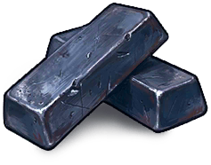

材料
物品 · 材料优质金属
High Quality Metal

High Quality Metal / 材料获取方式
获取方式掉落可通过掉落获得
奖励/商店可通过奖励或商店获得
熔炉优质金属矿石 → 优质金属 ×1
回收可从机枪炮塔 ×30、K.V. 9mm ×25、FALX-62 ×25、DVX ×25、B51 ×22、装甲双开门 ×20、霰弹枪炮塔 ×20、军用护甲 ×17、突击步枪 ×15、火箭发射器 ×15、猎枪 ×10、电锯 ×10、加固的方形舱门 ×10、气锤 ×10、强化型三角形舱门 ×10、装甲门 ×10、半自动步枪 ×7、汤普森 ×6、高级熔炉 ×5、光学瞄准镜 ×5、霰弹枪 ×5、采石场 ×5、补偿器 ×5、沙漠之鹰 ×5、炮塔 ×5、雪球炮塔 ×5、金属胸甲 ×4、防化服 ×4、全息瞄具 ×3、金属护腿 ×3、W94 ×3、枪口制退器 ×2、瞄准计算机 ×2、加长弹匣 ×2、步枪枪身 ×2、金属面具 ×2、步枪零件 ×2、监控摄像头 ×1、金属靴 ×1、半自动步枪枪身 ×1、电子垃圾 ×1、高石门 ×1、高石墙 ×1、左轮手枪 ×1、金属薄板 ×1、冲锋枪枪身 ×1、压力地雷 ×1回收获得
物品说明
用于制作部分金属物品的稀缺资源。
制作说明
在熔炉中由高品质矿石熔炼而成。可以在地图上的物资箱中找到。